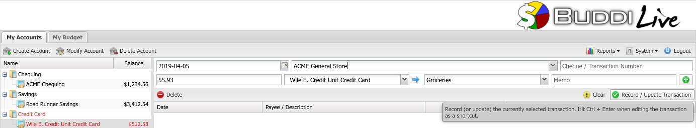
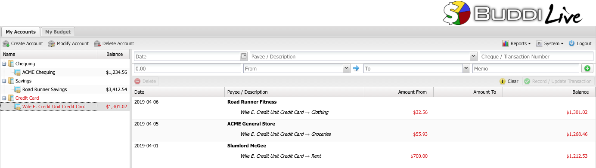

Once you have your Accounts and your Budget Categories set up, you are ready to start recording your transactions. To do this, go to the My Accounts tab and click on the account which the money is going to or coming from. In our example, we will be recording expenses put on our Wile E. Credit Union Credit Card. We have just spent $55.93 at the ACME General Store on groceries, and will be recording this expense in Buddi Live.
First, select the correct date. You can either type in the date manually, or select it by clicking the button next to the field. Under the Description field we enter the store name. We have not used a number for this transaction, so we can just leave it blank. If we had payed by cheque instead of credit card, though, we could record the cheque number here. The amount is entered as well.
The next two pulldown menus are where you select which Account or Budget Category the transaction is coming from, and going to. In our example, the money is coming from our Credit Card account, and is going to the Groceries category.

When you are finished entering the information, click on Record. This will save the transaction, and show it in the transaction list, as shown in the screenshot below. In the screenshot, we have also entered some other transactions. You can see how the balance (the numbers in bold on the far right side of the window) updates with each transaction.
